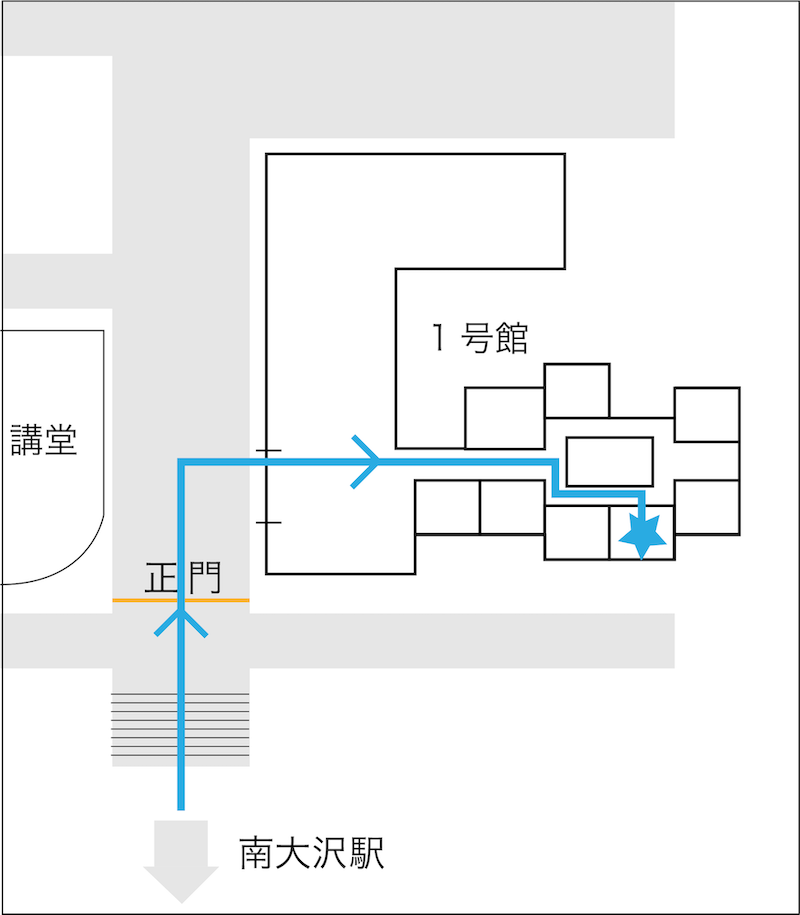

東京都立大学大学祭、『みやこ祭』を彩るプロジェクションマッピング。
インダストリアルアート学科の学生の有志企画で、今年で６回目の投影となりました。
例年は外壁に映していましたが、今回は初の室内投影に挑戦。
外では夜しか見ることのできなかったPMですが今年は室内で迫力のある映像をお届けします！
11/3(木)、11/5(土)
東京都立大学みやこ祭１日目、３日目
1号館1階103教室

1日目11回、3日目9回の全20回上映を予定しています。
また今年の投影は予約が必須 となります。みやこ祭ホームページより予約フォームの入力をお願いします。
| 11.3(木) | 12:00- | 12:30- | 13:00- | 13:30- |
| 14:00- | 15:00- | 15:30- | 16:00- | |
| 16:30- | 17:00- | 17:30- | ||
| 11.5(土) | 12:00- | 12:30- | 13:00- | 13:30- |
| 14:00- | 15:00- | 15:30- | 16:00- | |
| 16:30- |
こちらのURLから感想アンケートフォームに飛ぶことができます。ご協力よろしくお願いいたします。
Projection Mapping 2022 感想・アンケート1日目の上映終了後公開予定です。
もうしばらくお待ちください。
PM公式アカウントはこちら
Kuroiwa Mikaze/ Iwashita Rina/ Ikeya Tomoaki/ Toukairin Ami/
使用楽曲 : Mutant / ZUKISUZUKI https://zukisuzukibgm.com/mutant/
Takesako Honoka / Shimasaki Taichi /
使用楽曲 : Enigma / Guardagujas https://soundcloud.com/guardagujas/enigma
Mizushima Riko / Tamura Riku / okusan /
使用楽曲：悠久の時へ https://amachamusic.chagasi.com/
Yano Haruka / Noguchi Saki / Tago Yasuko / Katayama Akari / Fukuda Haruka / Toumorokoshi /
使用楽曲 : Aqua Blue / FLASH☆BEAT
https://dova-s.jp/bgm/play14665.html